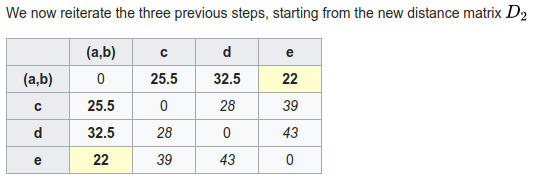

Principles and Applications of Modern
DNA Sequencing
EEEB GU4055
Session 13: Phylogenetics
Today's topics
1. Recap of genome scaffolding methods
2. Phylogenetic inference problem.
3. Likelihood approaches.
4. Alignment, homology, and phylogenetic markers.
5. Genealogies and gene trees.
Scaffolding: Hi-C Proximity Ligation
Restriction digestion; streptavidin bead extraction; paired-seq.
Scaffolding: Amaranthus Hi-C Assembly

10X genomics linked-read sequencing
10X genomics linked-read sequencing
Major Genome Projects
Major Genome Projects
Tree thinking exercises
Reading trees involves interpreting the order in which lineages share common ancestors by tracing relationships backwards from the tips towards the root. Rotating nodes does not affect these relationships, even though the order of the tips changes. Which topology is different?

Trees as data
Phylogenetic trees are more than just pictures, they represent a data structure that can be interpreted and used in model-based analyses. Stored in Newick format.

Trees as data
Phylogenetic trees are more than just pictures, they represent a data structure that can be interpreted and used in model-based analyses. Stored in Newick format.

Phylogenetic inference: why?
Much of evolutionary research involves reconstructing the past, or making inferences on the basis of relatedness/ancestry. Thus it is relevant to understand how evolutionary relationships are inferred, and the level of confidence we should place in various types of inference.

Phylogenetic inference: why?
Dating evolutionary events: when populations or species diverged; whether different lineages show correlated histories; to compare rates of divergence among lineages; to compare histories of different genes; to infer ancestral states (geography, traits).

Phylogenetic inference: why?
Comparative methods: species are non-independent data points. Some share more evolutionary history than others, i.e., diverged from a common ancestor more recently.
Example: Birds fly and lay eggs, mammals mostly do not fly or lay eggs. Is the correlation between flying and laying eggs an adaptation? Almost surely not, it is a coincident correlation due to the shared history of all mammals versus all birds, and the traits they inherited from their ancestors.
Phylogenetic inference: examples
Methods of phylogenetic inference, and model-based historical inferences using trees, are both highly active areas of research. Many new methods are published in the journal of Systematic Biology, while countless applied examples are published in various journals, including Evolution, Molecular Biology and Evolution, Molecular Phylogenetics and Evolution, Molecular Ecology, etc.
Phylogenetic inference: methods
Collect/measure homologous characters for some number of taxa. For DNA, identifying homology typically involves targeting regions of the genome using primers, or mapping sequenced reads from the genome to the same region of a reference genome. Either way, it is based on sequence similarity. This is typically followed by a more rigorous multiple sequence alignment.

Phylogenetic inference: methods

Phylogenetic inference: methods
A general outline of phylogenetic inference:
1. Propose a starting tree (e.g., random or star).
2. Score based on some criterion (e.g., parsimony, likelihood, distance).
3. Modify to propose a new tree, return to step 2.
Phylogenetic inference: methods
Distance methods: build a tree based on pairwise distances (e.g., UPGMA and neighbor-joining).
Parsimony methods: search for best tree based on minimizing character changes along branches.
Likelihood/statistical methods: search for tree on which the observed data is most likely to have evolved under an assumed model of evolution.
Other methods: many are variants of likelihood statistical methods, but others exist as well, but the most popularly used are listed above.
Phylogenetic inference: distance methods (UPGMA)
1. A pairwise distance matrix is computed from characters.

2. New internal node is created joining the shortest distance between points. Their branch lengths are set to half the distance, and a new matrix is computed to this node using average distance to its descendants.
3. repeat from 1 until all internal nodes are added.

Phylogenetic inference: distance methods (neighbor-joining)
1. A pairwise distance matrix is computed from characters.
2. (Starting from a star-tree initially), join two nodes with smallest distance to create an ancestor, transform distance matrix so that all pairwise distances are retained (uses entire matrix not just pairs).
3. repeat from 1 until all internal nodes are added.
Phylogenetic inference: distance methods (summary)
shortcomings: They yield a single best tree but do not provide a score (e.g., likelihood) that could be used to compare against alternatives (how much better is it?)
Sensitive to model assumptions, such as molecular clock (UPGMA) or that distances are additive (i.e., when one gets longer another gets shorter; NJ).
strengths: it is very fast and computationally efficient. For this reason NJ has had a resurgence for use in population genomics where datasets ae very large and model assumptions are less likely to be violated among closely related populations (e.g., human populations).
Phylogenetic inference: Parsimony
A character matrix and a topology. Count the number of character state changes.


Phylogenetic inference: Parsimony
A character matrix and a topology. Count the number of character state changes.

Phylogenetic inference: Parsimony
A character matrix and a topology. Count the number of character state changes.

Phylogenetic inference: Parsimony
Parsimony principle:
The evolutionary tree that minimizes the net amount of evolution (fewest steps) should be preferred.
1. Propose a topology (e.g., randomly)
2. Calculate score (e.g., Fitch algorithm)
3. Propose new tree and repeat (test all or many trees).
Phylogenetic inference: methods
Parsimony's pitfall
It does not account for homoplasy (repeated mutations to the same site).

Inferring the past from the present
Statistical modeling is widely used in evolutionary research
to test or compare hypotheses and to estimate model parameters.
A model describes a mechanistic (probabilistic) process that could produce observable data. It is especially useful when
we cannot observe the past, but we can observe data at the present.
Models, Probability, and Likelihood
The use of statistical models for historical inference
is not unique to evolution, or biology, although many statistical methods were developed by biologists (e.g., the Likelihood framework was developed by the geneticist R.A. Fisher)
A likelihood function describes the probabilitiy of a set of observations given a set of model parameters.
Likelihood can express the probability of a DNA sequence alignment given a phylogenetic hypotheses, or it can express the probability that a coin toss will turn up heads versus tails.
What do we mean by a model parameter?
Statistical phylogenetics
The likelihood function calculates probability of observing a character state (DNA site in an alignment) under a specific model of molecular substitution and a phylogenetic tree (more on these soon).
Simplest models treat each DNA site independently so that the likelihood of a sequence alignment (many sites) is simply the product of the individual site likelihoods:
$$ L(D) = \prod_{i=1}^{n} L(D_{i}) = \prod_{i=1}^{n} f(D_{i} | \Theta) $$
Statistical phylogenetics
By only knowing the results of coin tosses that occurred in the past we are able to estimate the model parameters that are most likely to have produced them (i.e., the probability the coin toss is heads or tails).
The same principle applies to estimating the evolutionary distance between two aligned DNA sequences. Looking only at the results of an evolutionary process that occurred in the past we can estimate the model parameters that are most likely to have produced the DNA differences between a set of taxa.
Whereas the coin toss problem assumed a Bernoulli distribution as the underlying model, for DNA substitutions we use a molecular substitution model, which is a type of Continuous Time Markov Model.
Molecular Substitution Models
Many mutations occur that are not observable in the present-daty samples alone due to homoplasy (repeated mutations to the same sites).
Molecular Substitution Models
Instantaneous transition rate matrix ($Q$): Similar to the coin toss example, where q was equal to 1-p, you can see that the probability of not changing over some length of time is simply (1 - probability of changing.)

https://en.wikipedia.org/wiki/Models_of_DNA_evolution
Molecular Substitution Models
Transition-probability matrix: the probability of change between states over some time interval (t) is easily calculated as $ P(t) = e^{Qt} $. This tells us the probability of starting in some state (e.g., A) and ending as another (e.g., T). Jukes-Cantor Model predicts equal prob. for any state over very long branches.

https://en.wikipedia.org/wiki/Models_of_DNA_evolution
Markov Process Models
A Markov Process is a random process in which the future state is not dependent on past states, but only on the present. (It is memory-less.)
These types of models are used extensively in evolutionary modeling, and in many other fields. Made up of a set of discrete states, starting frequencies, and a mechanism for transitioning between states.
Can be used to infer parameters (describing an unobserved process) that are most likely to produce observed data. For example, we model changes occurring in DNA sites as a Markov process.
Inferring phylogenies by ML
Felsenstein (1981) is a classic paper with >10K citations although the methods in this paper have easily been used 10-100X this often.
The likelihood of a tree is calculated as the likelihood of the data (sequence alignment) given the hypothesis (tree) under a given model (Markov substitution process).
Unlike coin tosses the likelihoods for different trees do not sum to 1. In theory, we must calculate the probabilitiy of the sequence alignment on every tree to find the maximum.
The probability of a tree hypothesis is calculated as the probability of observing substitutions along each branch of a tree. We must optimize parameters of our model (e.g., JC), and branch lengths of each tested tree.
Inferring phylogenies by ML
Felsenstein (1981) is a classic paper with >10K citations although the methods in this paper have easily been used 10-100X this often.
Because tree size is so large, we must use heuristic tree search algorithms to find the best tree. Felsenstein proposed a step-wise addition method to start, followed by local re-arrangements. Many similar methods are used today, involving sequential re-arrangements of the tree.

The subprocess module
Execute code in a bash environment and return results.
import subprocess
# call a command with separate terms written as strings in a list
cmd = ["muscle", "-in", fasta_file, "-out", aligned_file]
proc = subprocess.call(cmd)
The subprocess module
Execute code in a bash environment and return results.
import subprocess
# write stdout to a file
cmd = ["echo", "hello world"]
proc = subprocess.Popen(cmd, stdout=subprocess.PIPE)
stdout, stderr = proc.communicate()
print(stdout)
hello world